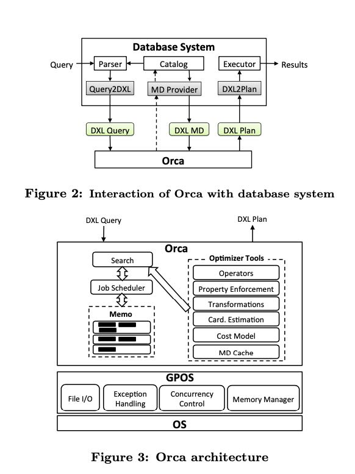
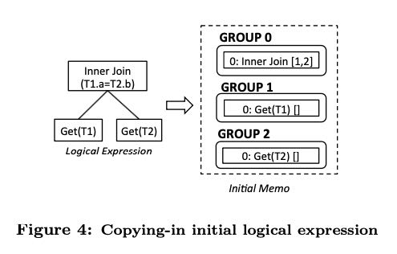

<?xml version="1.0" encoding="utf-8"?>
<!DOCTYPE html PUBLIC "-//W3C//DTD XHTML 1.0 Strict//EN"
"http://www.w3.org/TR/xhtml1/DTD/xhtml1-strict.dtd">
<html xmlns="http://www.w3.org/1999/xhtml" lang="en" xml:lang="en">
<head>
<meta http-equiv="Content-Type" content="text/html;charset=utf-8" />
<meta name="viewport" content="width=device-width, initial-scale=1" />
<title>Orca: A Modular Query Optimizer Architecture for Big Data</title>
<meta name="author" content="dirtysalt" />
<meta name="generator" content="Org Mode" />
<link rel="shortcut icon" href="/themes/favicon.ico" /><link rel="stylesheet" type="text/css" href="/themes/simple.css"/></head>
<body>
<div id="content" class="content">
<h1 class="title">Orca: A Modular Query Optimizer Architecture for Big Data</h1>
<p>
这个系统是用来替换GP/Pivotal原来的Planner的，强调如何实现一个模块化的Query Optimizer，关注于包括：模块化，扩展性，利用多核，可验证性（或者说可调试性），以及性能几个方面。
</p>

<p>
整个Orc内部结构以及位于系统中的位置如下：
</p>
<ul class="org-ul">
<li>数据交换语言成为DXL(data exchange language), XML格式表示</li>
<li>Query经过Parser变为DXL Query</li>
<li>Orca拿到DXL Query之后开始进行搜索优化，期间需要从Catalog拿到metadata</li>
<li>拿metadata这个过程是通过MD Provider接口完成的，数据则是DXL MD返回</li>
<li>Orca生成物理执行计划之后，也是通过DXL Plan交付给Executor的</li>
</ul>
<p>
可以看到整个过程都是非常模块化的，把所有和外部系统都规定好了接口和数据交换格式。
</p>


<div id="orga9d702c" class="figure">
<p>
</p>
</div>

<p>
在上面Orca Arch图里面，有几个关键的概念：
</p>
<ul class="org-ul">
<li>Memo. 这个可以认为是搜索空间</li>
<li>Search/Job Scheduler. 任务调度器负责在Memo里面进行搜索</li>
<li>Transformation. 对逻辑计划和物理计划进行改写和变换</li>
<li>Property Enforcement. 对计划进行加入限制，这个过程可能会引入算子，但是可能可以为上层优化提供机会。</li>
</ul>

<p>
在开始进行搜索优化之前，一个逻辑计划的表示其实分成了好几个部分（可以认为是fragment）。每个部分是个子树，我们叫做group，里面每个可能的实现叫做group expr(group表达式）。考虑到转换和重写，所以一个group里面可能会存在多个group expressions.
</p>

<p>
经典的优化器就是，到了这一步，我们就对group expression进行cost计算，然后选择最优解。我理解Orca的不同地方在于，如果在这些group expr上施加某些限制(enforcement)的话，虽然sub expr cost更高了，但是可能整体的cost会更低。一个例子就是，如果对sub expr加入某个hash parittion的话，虽然多了一次shuffle,  但是在join的时候效率可能会更高。
</p>


<div id="orgdd5ca79" class="figure">
<p>
</p>
</div>

<p>
整个Optimization过程分为下面几个部分，
</p>
<ul class="org-ul">
<li>Exploration. 对group下面的group expr进行变换和改写。</li>
<li>Statistics Derivation. 对group做统计信息收集</li>
<li>Implementation. 将group的logical plan变为physical plan.</li>
<li>Enforcemenet. 对group增加某些限制约束，看是否可以得到更小代价的物理计划。</li>
</ul>

<p>
关于测试方面，我觉得Orca做的也很不错，一个是正确性验证，一个是性能回归。
</p>

<p>
正确性验证的话，考虑到Orca可以做到相对比较独立，所以完全可以把Query + MD + Plan放到一个文件里面，这对于调试来说就方便了不少。
</p>

<p>
性能回归的话，考虑到这个memo空间会比较大，所以Orca会进行plan采样（不知道是对root plan采样还是也可以对sub plan采样），拿这些采样去线上跑观察实际运行时间，然后验证自己的cost是否可信。具体来说，如果两个plan p1, p2, 如果cost(p1) &lt; cost(p2), 但是运行时间p2远小于p1的话，那么就值得分析一下具体原因了。
</p>
</div>
<div id="content"><!-- DISQUS BEGIN --><div id="disqus_thread"></div><script>/***  RECOMMENDED CONFIGURATION VARIABLES: EDIT AND UNCOMMENT THE SECTION BELOW TO INSERT DYNAMIC VALUES FROM YOUR PLATFORM OR CMS.*  LEARN WHY DEFINING THESE VARIABLES IS IMPORTANT: https://disqus.com/admin/universalcode/#configuration-variables*/var disqus_config = function () {this.page.url = 'https://dirtysalt.github.io/html/orca-a-modular-query-optimizer.html';this.page.identifier = 'orca-a-modular-query-optimizer.html';};(function() {var d = document, s = d.createElement('script');s.src = 'https://dirlt.disqus.com/embed.js';s.setAttribute('data-timestamp', +new Date());(d.head || d.body).appendChild(s);})();</script><noscript>Please enable JavaScript to view the <a href="https://disqus.com/?ref_noscript">comments powered by Disqus.</a></noscript><!-- DISQUS END --></div></body>
</html>
